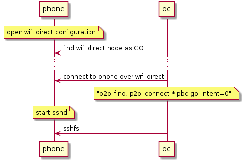
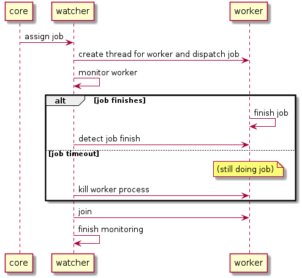

Diary
Table of Contents
introduce wifi direct between PC and Android under sshfs
Usually I write memo in files in the storage under my Android phone.
Previously I use usb-tethering between Android phone and PC connection.
structure
mount sshfs + wifi direct

speed test between phone and PC
wifi direct
% iperf3 -c 192.168.49.1 Connecting to host 192.168.49.1, port 5201 [ 4] local 192.168.49.80 port 42588 connected to 192.168.49.1 port 5201 [ ID] Interval Transfer Bandwidth Retr Cwnd [ 4] 0.00-1.00 sec 6.64 MBytes 55.7 Mbits/sec 0 243 KBytes [ 4] 1.00-2.00 sec 5.90 MBytes 49.5 Mbits/sec 0 355 KBytes [ 4] 2.00-3.00 sec 5.53 MBytes 46.4 Mbits/sec 0 395 KBytes [ 4] 3.00-4.00 sec 5.53 MBytes 46.4 Mbits/sec 0 485 KBytes [ 4] 4.00-5.00 sec 3.04 MBytes 25.5 Mbits/sec 1 485 KBytes [ 4] 5.00-6.00 sec 5.41 MBytes 45.4 Mbits/sec 0 509 KBytes [ 4] 6.00-7.00 sec 5.72 MBytes 48.0 Mbits/sec 0 536 KBytes [ 4] 7.00-8.00 sec 5.97 MBytes 50.0 Mbits/sec 0 591 KBytes [ 4] 8.00-9.00 sec 6.23 MBytes 52.3 Mbits/sec 0 653 KBytes [ 4] 9.00-10.00 sec 6.25 MBytes 52.4 Mbits/sec 0 724 KBytes - - - - - - - - - - - - - - - - - - - - - - - - - [ ID] Interval Transfer Bandwidth Retr [ 4] 0.00-10.00 sec 56.2 MBytes 47.2 Mbits/sec 1 sender [ 4] 0.00-10.00 sec 52.6 MBytes 44.2 Mbits/sec receiver
wired
% iperf3 -c 192.168.42.129 Connecting to host 192.168.42.129, port 5201 [ 4] local 192.168.42.143 port 38882 connected to 192.168.42.129 port 5201 [ ID] Interval Transfer Bandwidth Retr Cwnd [ 4] 0.00-1.00 sec 18.9 MBytes 159 Mbits/sec 0 187 KBytes [ 4] 1.00-2.00 sec 19.2 MBytes 161 Mbits/sec 0 215 KBytes [ 4] 2.00-3.00 sec 19.3 MBytes 162 Mbits/sec 0 245 KBytes [ 4] 3.00-4.00 sec 19.1 MBytes 160 Mbits/sec 0 245 KBytes [ 4] 4.00-5.00 sec 19.3 MBytes 162 Mbits/sec 0 266 KBytes [ 4] 5.00-6.00 sec 19.3 MBytes 162 Mbits/sec 0 266 KBytes [ 4] 6.00-7.00 sec 19.2 MBytes 161 Mbits/sec 0 266 KBytes [ 4] 7.00-8.00 sec 19.4 MBytes 163 Mbits/sec 0 266 KBytes [ 4] 8.00-9.00 sec 19.0 MBytes 159 Mbits/sec 0 430 KBytes [ 4] 9.00-10.00 sec 19.2 MBytes 161 Mbits/sec 0 430 KBytes - - - - - - - - - - - - - - - - - - - - - - - - - [ ID] Interval Transfer Bandwidth Retr [ 4] 0.00-10.00 sec 192 MBytes 161 Mbits/sec 0 sender [ 4] 0.00-10.00 sec 191 MBytes 161 Mbits/sec receiver
So the wifi direct environment is 3~4 times slower than the wired one
SOMEDAY sshfs brutual shutdown cause other problems
- when you modify file which is mounted via sshfs, your editor may get stuck
- shutdown gracefully when wifi is away
- enable verbose log
behavior difference between wifi and usb
tramp on termux hotfix
Some people say "tramp in emacs avoid this problem"
So I tried tramp after setting the following additionally.
(add-to-list 'tramp-remote-path "/data/data/com.termux/files/usr/bin" t) (add-to-list 'tramp-remote-path "/data/data/com.termux/files/usr/bin/applets" t)
I feel this was so slow not reliable enough unfortunately.
Job title shows mindset, not position tech
Just for note. Job title is of course a position in the company, but one colleague tells a junior in his team that since companies have various structure, same name positions have various roles. So It is mind-set that is made common among the company by title.
Initial test emacs org
Today is 7-year-anniversary for Fukushima Earthquake. Berlin weather radically changes today, now 16 cel degree. It's crazy because it was -10 cel degree.
Try to start using https://github.com/fniessen/org-html-themes.
design pattern of pthread
- worker - watcher model
- normal case
- how watcher detects worker finishes
- late case
- how to kill the thread from watcher to worker
- normal case
